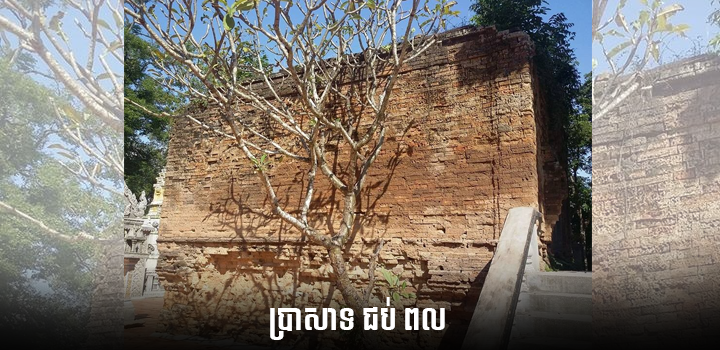
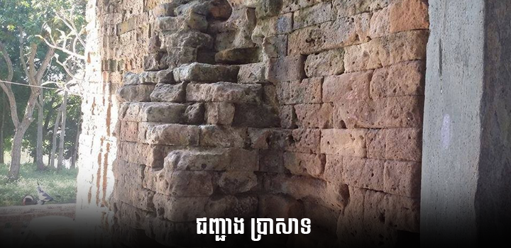
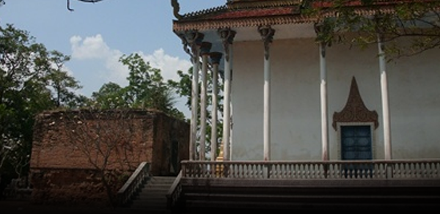

ប្រាសាទជប់ពល
ស្ថិតនៅក្នុងទីតាំង វត្តបារាយណ៍ ភូមិបារាយណ៍ ឃុំបារាយណ៍ ក្រុងដូនកែវ ខេត្តតាកែវ ចម្ងាយ ៣,៥ គ.ម៉. ភាគឦសានពីសាលាខេត្តតាកែវ មានប្រាសាទឥដ្ឋមួយដែលមានឈ្មោះថា ប្រាសាទជប់ពល ។
ប្រាសាទនេះមានទំហំ 13 ម៉. 4 ជ្រុង ធ្វើអំពីឥដ្ឋដែលសព្វថ្ងៃនេះ មាននៅសល់តែតួប្រាសាទផ្នែកប៉ុណ្ណោះ។ ប្រាសាទឥដ្ឋនេះមានទ្វារបែរទៅទិសខាងកើត និងមានហោជាងទទេមួយផងដែរ តែមិនឃើញមានផ្ដែរចម្លាក់អ្វីនោះទេ ។ មានបំណែកសោមសូត្រ នៅជ្រុងខាងជើងប្រាសាទផងដែរ ។ នៅផ្ទៃខាងក្នុងប្រាសាទមានដុះរុក្ខជាតិស៊ុបទ្រុបដោយមិនមានអ្នកណាសំអាតទាល់តែសោះ ។ នៅជុំវិញប្រាសាទមានគូទឹកព័ទ្ធជុំវិញដែលមានទំហំ 130 ម៉. × 150 ម៉. ។ នៅទិសខាងកើតប្រាសាទ មានបារាយណ៍ដែលអ្នកស្រុកហៅជាទូទៅថា ទន្លេអុំៗ ដែលមានទំហំ 7 ម៉. x 100 ម៉. ។
គេបានបញ្ជាក់ថា គេបានរកឃើញសិលាចារឹក K. 789 នៅទីនេះផងដែរ តែខ្ញុំមិនទាន់រកឯកសារអំពីសិលាចារឹកនោះឃើញ ហើយក៏គ្មានជំនាញឯកទេសខាងអានសិលាចារឹកផងដែរ ។ ដូច្នេះ សង្ឃឹមលោកអ្នកស្រាវជ្រាវណាដែលចេះអាន ក៏ដូចជាមានសិលាចារឹកលេខខាងលើនេះ ជួយផ្ដល់ជាឯកសារ ដើម្បីចែករំលែកដល់អ្នកសិក្សា និងអ្នកចង់ចេះចង់ដឹងអំពីខ្មែរទាំងអស់គ្នា ។
